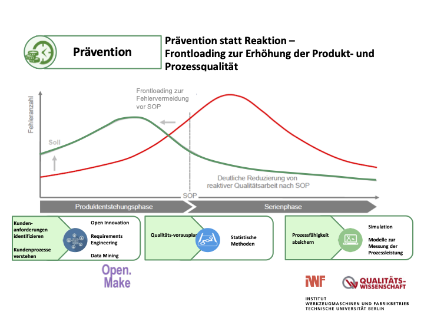
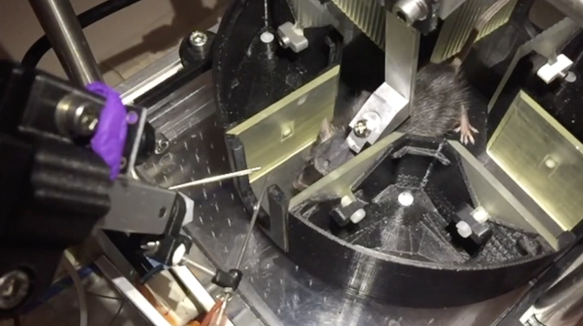
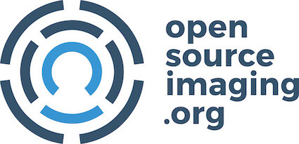
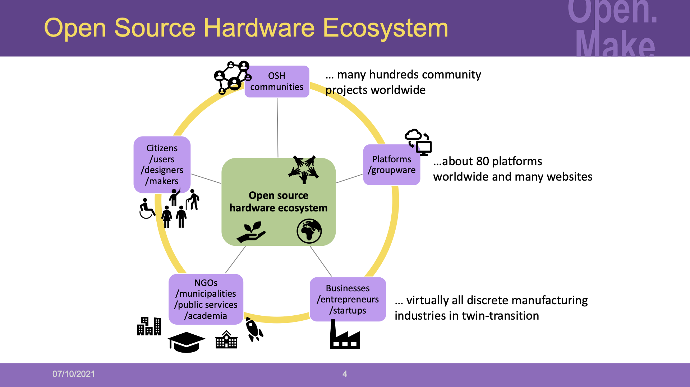

| October 7, 2021
On October 7th 2021, the Open.Make project kickoff meeting took place at the Charité campus in Mitte. The three research partners/labs, the project officer from the Berlin University Alliance (BUA) and three invited external partners presented and discussed their respective works. It was a successful meeting as it offered a broad overview of the benefits of open hardware in academia and beyond. While it was originally planned as fully in-person, the meeting had to be shifted to a hybrid meeting, as two participants could not come to the meeting location.
This post presents shortly how the day went before providing more detailed minutes of the content.
- Summary
- Detailed minutes
Summary
The principal investigators of the three partners/labs presented their related research activities:
- on the mammalian cortex and the importance of neuronal computation in “pyramidal cells” dendrites (HU Berlin);
- on quality management in product development (TU Berlin);
- and on robotics use for the study of emerging properties of social behaviour (FU Berlin).
This was followed with a presentation about the BUA “Objective 3: Advancing Research Quality and Value” on open science and research quality improvement.
Then, three selected research hardware use cases were presented:
- the Airtrack, a virtual reality simulator for rodents that allows to monitor brain activity (HU Berlin project);
- the RoboFish, an experimental aquarium in which fish swarms swim and interact with robotic fish (FU Berlin project);
- and the Open MRI, a magnetic low-cost resonance imaging scanner (community project).
Moreover, there were three insightful thematic presentations related to Open.Make:
- on the Open Hardware Observatory (OHO), a non-profit association and online platform for sustainable open hardware;
- on the LabMaker GmbH, a medium-sized manufacturing enterprise in Berlin specialised in small-batch production of open hardware from and for biological research;
- and about the open source hardware (OSH) ecosystem in general.
Detailed minutes
Long read - the following read takes circa 9 - 10 minutes.
Opening presentations by the principal investigators and the project officer
In the first hour, the principal investigators of the three partners/labs and the project officer gave their presentations.
The Open.Make project
After the ten participants who could attend in person had arrived - and everyone else joined remotely, Julien Colomb (HU Berlin) in his role as organizer and moderator officially kicked off the meeting by giving an overview of the project, its intended timeline, and what has been done so far. This was followed by the three collaborating principal investigators presenting their chairs/labs, especially what their respective capabilities and skillsets encompasses as well as how their interests align with the project:
FU Berlin
The first principal investigator to present was Professor Tim Landgraf (FU Berlin) who introduced his lab’s behavioural research with a focus on machine learning and robotics. He presented several works on (robo)fish and (robo)bees and pointed out the struggles of making their developed hardware open and to publish it for others to also use and jointly develop the prototype. This is a problem of money and he would like to see his lab publish much more, in particular with an emphasis on promoting citations of hardware-related work.
HU Berlin
This was followed by Professor Matthew Larkum (HU Berlin) who kindly hosted the meeting and talked about the collaborative research centre CRC1315 and its research consortium (also employing Julien Colomb) which may continue and implement the outputs of the Open.Make project. He presented the work of his lab on pyramidal cells in the neo-cortex and their hypothesis about the role of the very peculiar dendritic tree these neurons have. He also mentioned the development of the Airtrack system, that allows to monitor and modify cellular activity during animal performance.
TU Berlin
Closing the round of presentations by the principal investigators, Professor Roland Jochem (TU Berlin) detailed his chair’s work in quality management for product development and for production engineering. In particular, he illustrated how early spotting of design errors (so-called “frontloading”) can significantly reduce development costs as changing the design is less costly in early design phases. With regard to openness and inclusivity, he put forward the great importance of involving all relevant actors in product design and development right from the beginning. The emphasis on continuous gathering and tracking of customer requirements in open design and OSH development can thus be seen as another form of preventing design errors.

Berlin University Alliance
Before everyone headed into a break, Stefan Skupien (BUA), the project officer gave an overview of the BUA’s work, their main goals and their expectations for the project. Figuratively speaking, the main question for them is: what results can they [others] take from this project in 18 months and apply to the rest of the BUA? In future, open science should be conducted in Berlin within constellations that consider a wider collaborative focus and for that it will be key to find new ways how to assess, foster and reward the outcomes of open science implementations. Open.Make was awarded amongst five of twelve projects that applied for the same open call and he sees various interesting directions how the project could create an impact.
Presentations of the use cases
The next series of talks - with one intermission - were about three specific use cases for the hardware publication platform to be developed in Open.Make:
Airtrack hardware
Starting off the use case presentations, the word was given to Julien Colomb once more (as the foreseen speaker could not attend due to health issues), this time presenting the details of the Airtrack system and how being open has already enabled eight labs to incorporate it and co-develop it further to a versatile experimenting platform. The group of researchers keeps extending the Airtrack system for emergent research inquiry along various different interests so various adjustments keep evolving in parallel (e.g. features to support new activities or stimulate more realistic rodent behaviour). This generative design process appeared very interesting to the Open.Make team as it is expected to be representative for many joint projects for research hardware.
RoboFish
After everyone had returned from a well-deserved break, Moritz Maxeiner (FU Berlin) presented the RoboFish system and the Electrofish follow-up project in particular, where open hardware add-on components are presently being developed. A robot case is running below the aquarium, moving a 3D printed fake fish thanks to a magnet. The aquarium is observed with a camera from above. One can then make the robot move in accordance with the behaviour of the other fishes, with a computer closing the loop between the video input and the robot movement output. In future, it is the hoped that the technical documentation for the RoboFish can be published sufficiently to enable independent replication by other research teams as well as for continuity in case of future staff changes. The Open.Make team will study current barriers and possibilities to support this aim.

Bierbach, D., Lukas, J., Bergmann, A., Elsner, K., Höhne, L., Weber, C., Weimar, N., Arias-Rodriguez, L., Mönck, H. J., Nguyen, H., Romanczuk, P., Landgraf, T., & Krause, J. (2018). Insights into the Social Behavior of Surface and Cave-Dwelling Fish (Poecilia mexicana) in Light and Darkness through the Use of a Biomimetic Robot. In Frontiers in Robotics and AI (Vol. 5). Frontiers Media SA. https://doi.org/10.3389/frobt.2018.00003
Open MRI

The use case presentations were then closed off by Lukas Winter from the Physikalisch-Technische Bundesanstalt (PTB), who recounted in-depth his experience - including the challenges - in developing an open source magnetic resonance imaging scanner called open MRI that, for certain use cases, can hold its own against significantly more expensive proprietary systems. While the main goal of the project is to be able to produce an affordable system (affordable here means 20,000 EUR, instead of half a million EUR), the prototype is already able to produce better images than their expensive counterparts in some particular cases. The whole process is complex as we are talking about health-related equipment, and the hardware has to go through specific quality assessment procedures. However, the community involved has been growing in the last years and the project is presently endorsed by many institutions. The strong focus on applied research creating open source technology to address market failure makes the use case very interesting, especially, with regard to certification issues or potential conflicts with intellectual property rights (IPR) protection strategies that remain the default in academia today.
Related thematic presentations
In the last segment, there were three presentations that are thematically related to Open.Make:
The Open Hardware Observatory (OHO)
Dietrich Jaeger made the start by giving an overview of the Open Hardware Observatory, a non-profit organization from Berlin that was founded in April this year and tries to make open hardware projects more easily findable, accessible and assessable through a dedicated online platform. He gave a quick walk-through on their website to show the OHO search engine and to see examples of the OHO accreditation system, which facilitates the review of hardware components. So far, the focus is mainly on mechanical products. So, the question came up, whether OHO is planning to extend the system for electronic hardware components. Also, it was asked, whether they would be interested to make the accreditation systems available as independently deployed and federated system. Both questions were cleared as the OHO team could indeed imagine to do so in due course.
LabMaker GmbH
Following that, York Winter spoke about three companies of his - LabMaker GmbH, PhenoSys GmbH, and Apprendis UG - each of which are interfacing with the open science hardware community. A thorough discussion ensued on the work of LabMaker, as the company is looking for promising hardware, before helping the hardware makers to go from the prototype to a production-ready hardware. They first make sure a community is present to respond to customer questions, as their margin is so slim that they cannot offer much customer support. They also only work on a piece of hardware if the original developers are ready to help them. Moreover, they make sure the originators are appropriately mentioned in the hardware description. These good practices seemed highly desirable to the participants.
The OSH ecosystem
The last talk was given by Robert Mies (TU Berlin), who gave an in-depth summary about the open source hardware (OSH) ecosystem. As the meeting was behind schedule, he presented concisely his understanding of the OSH ecosystem and what makes it such a unique and fascinating research subject. Thereby, he particularly touched upon the main elements, the high variety of actors in the OSH ecosystem and the emergence of OSH projects. He moreover shared some study results on the diversity of project categories, the characteristics of involved persons, different role descriptions, participation levels as well as the use of licenses. Additionally, he briefly introduced the Open Source Hardware Association (OWSHA) and the Gathering for Open Science Hardware (GOSH) as the most relevant associations in this domain.
Discussions
During the meeting, we discussed that hardware making in research is oftentimes very agile, that is that e.g. an explorative component can be very important and there is not so much planification. Therefore, documentation is difficult as the requirements are not fixed at the beginning of the project but are changing with the first data collected. Also, replicability can be less important in joint projects for research hardware than extending the system.
A very interesting question was raised by Professor Jochem to Stefan Skupien on creating new indicator sets for open science that could complement traditional measures like the Hirsch index. In his reponse, the latter sees a stronger focus on performance-based funding and also the involvement of ombuds persons could make a difference in future. In this regard, measures that support the creation of new career paths for hardware developers and makers in academia are a defined interest for Open.Make.
In the discussion with York Winter, the participants talked about the motivation of the makers in research labs to work with LabMaker. Some of them are given pro-forma royalties from the sold products, others are just happy that their hardware is used and that they get a better product for themselves. LabMaker’s activities within the niche of manufacturing small batches of open hardware was also of particular interest for Lukas Winter in view of potential future manufacturing routes for their Open MRI project. So, the meeting also provided some good networking opportunities.
One big topic of interest in Open.Make is on the challenges and potentials of adapting the FAIR principles for research hardware (see project scope). While it was briefly mentioned in the introductory presentation, the participants did not discuss the subject in further detail. However, there will be plenty of room in upcoming meetings since the thought has been planted as part of the original project idea and once progress can be reported.
The meeting lasted about half an hour longer than planned. Once the talks and the meeting had officially concluded, the participants remained for a while longer to exchange and discuss ideas, as well as clear up any remaining questions. There had already been an internal pre-kickoff amongst the Open.Make team in the last week of August at the TU Berlin to meet face-to-face for the first time and to commence the works. Yet, the open and constructive atmosphere during the kickoff with the project officer and the external participants was a great pleasure. It certainly set the team off to a good start for this joint two-years interdisciplinary, cross-Berlin university, theory-driven as well as applied research project.